Cómo montar, usar y recoger el punto de fotos. Equipos DK-BCN-CAN1, CAN2, SGF1 y SGF2.
Sigue el orden.
De cara a donde se pondrá la gente.
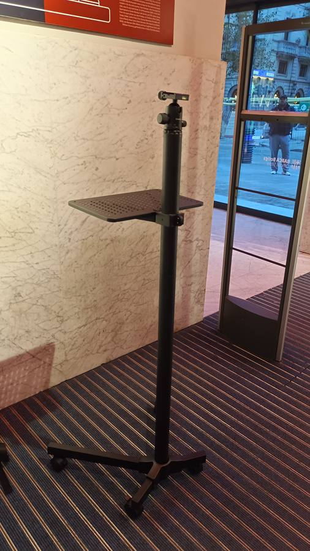
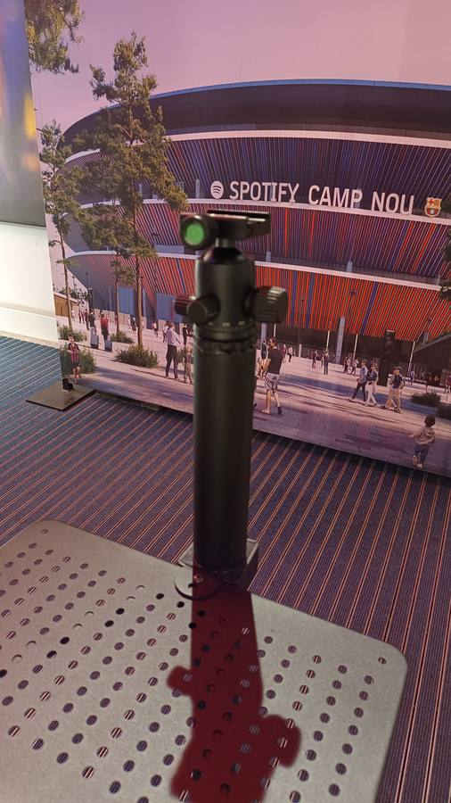
Tapa de debajo de la empuñadura, hasta que haga clic.
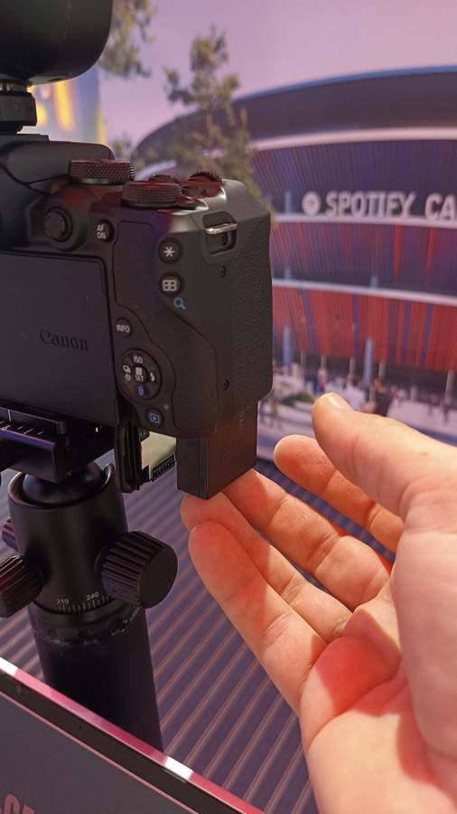
Con la rosca grande de la rótula subes, bajas o giras la cámara. El objetivo tiene que estar en 18 mm.
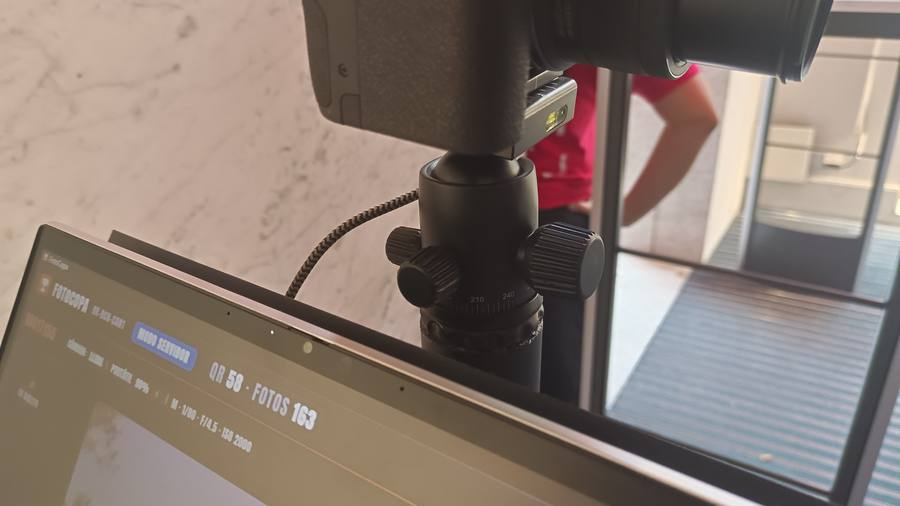
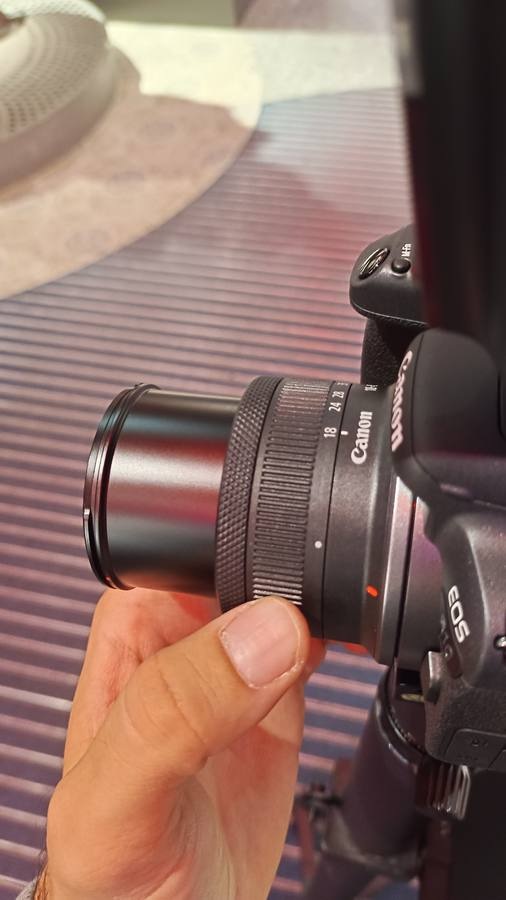
Deslízalo en la zapata hasta el fondo y gira la rosca hasta que haga clic.
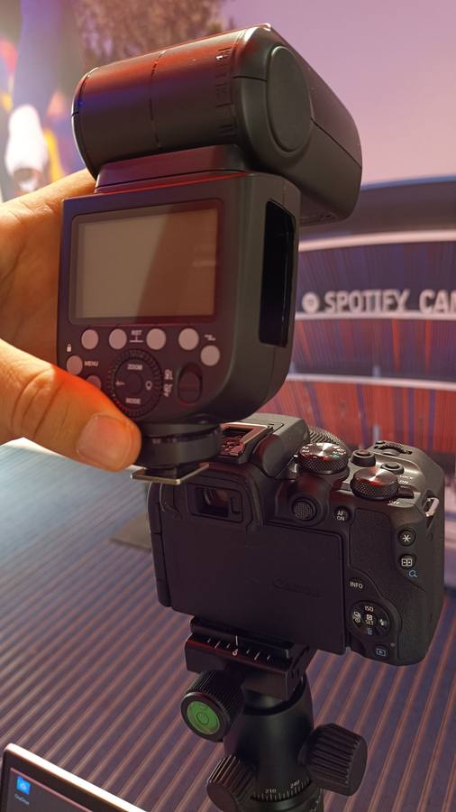
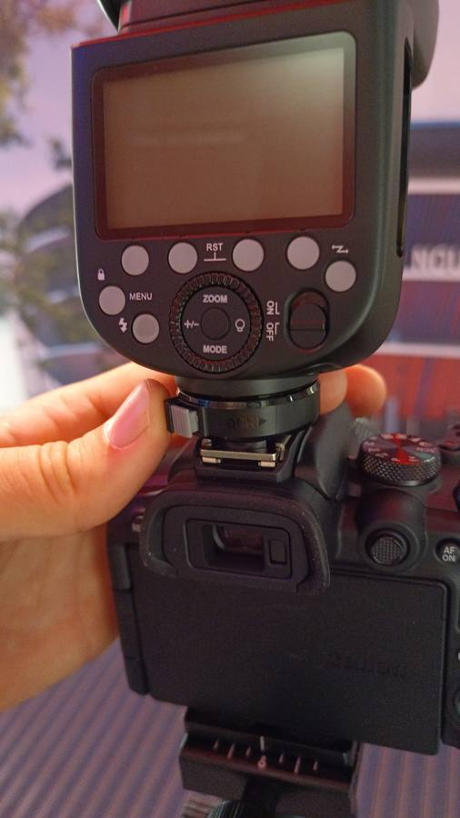
Batería por la tapa del lateral y difusor blanco. Por último, enciende el flash poniéndolo en ON.
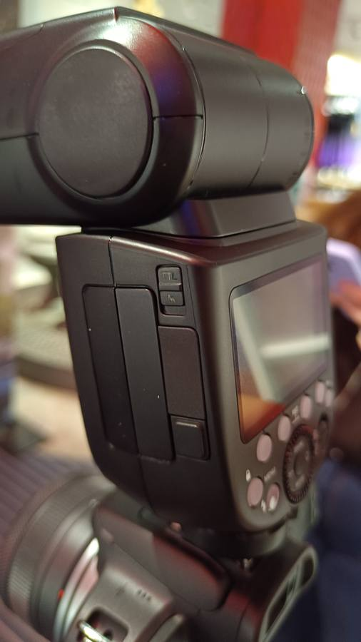
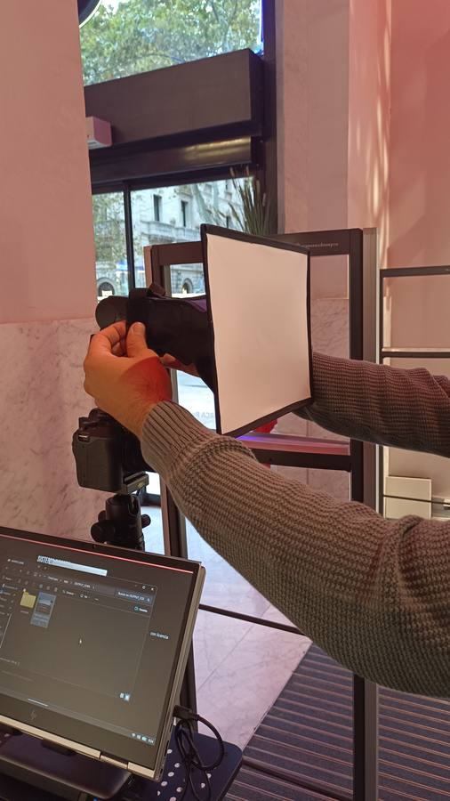
Ábrelo, enciéndelo y ponlo en modo tablet.
Portátil en su soporte. La power bank, a cualquier puerto USB-C del portátil.
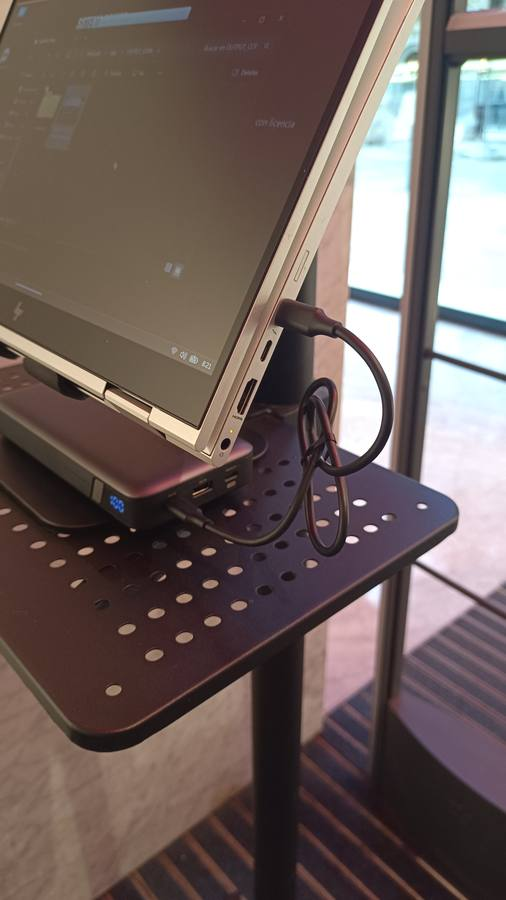
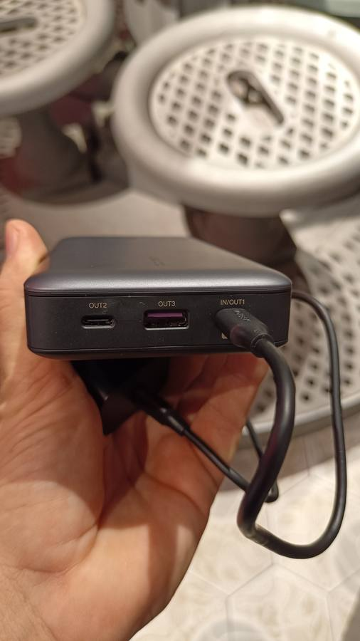
Cable de la tapita del lateral de la cámara a un puerto USB-C del portátil.
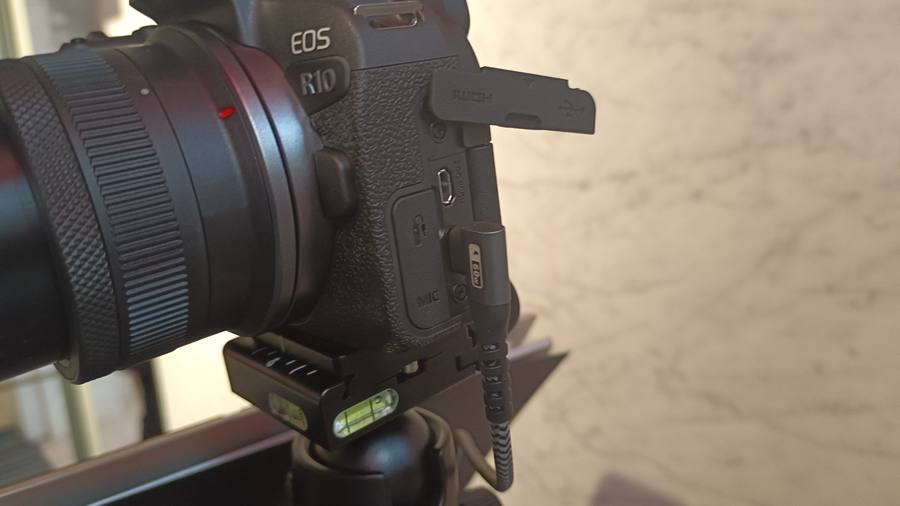
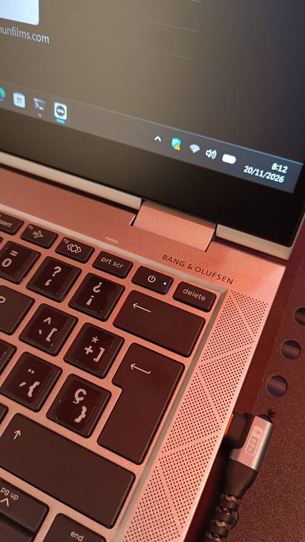
Dial de la cámara en M y enciéndela. Abre FotoCopa con este icono.
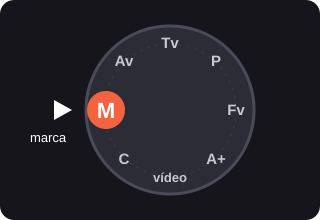
1. Abre Configuración: todo tiene que estar con el check verde.
2. Encuadra la copa bien centrada, con aire por arriba y por abajo.
3. Haz una foto de prueba con una compañera. Si no está bien de luz o de color, corrígelo con los ajustes de la derecha.
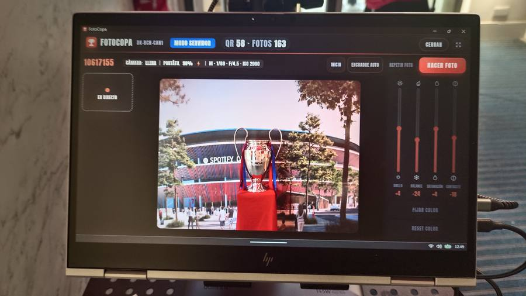
Al lado del botón «Inicio» siempre ves cómo van las baterías.
Lo que queda entre las dos líneas azules es lo que sale en el papel. Lo de fuera, arriba y abajo, se corta al imprimir.
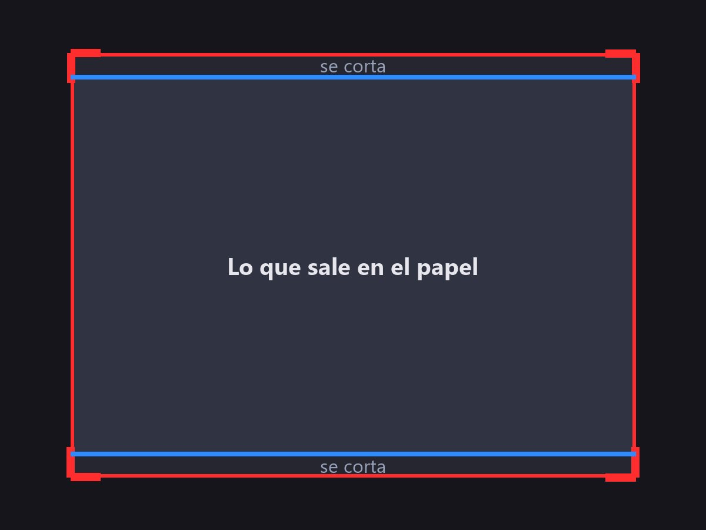
Si de luz o de color no sale como debe, abre Configuración y pulsa «Ajustes por defecto».
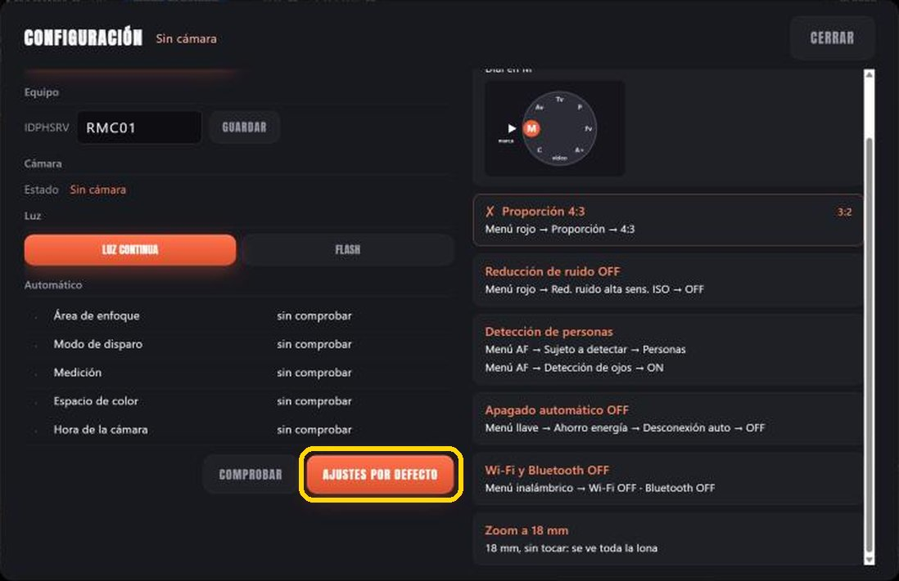
No hace falta tocar el portátil ni cerrar la app.
Pon la cargada y deja la gastada en el cargador.
En unos segundos la app la vuelve a ver sola. Comprueba que pone Cámara: llena.
Vienen puestos y la app los pone sola al abrirse. No los cambies.
| Punto | Modo | Velocidad | Diafragma | ISO |
|---|---|---|---|---|
| Canaletas | M | 1/80 | f/4.5 | 2000 |
| Sagrada Família | M | 1/100 | f/4.5 | 400 |
Menú Inicio de Windows → Apagar. Cuando la pantalla esté negra, pliégalo.
Cámara en OFF y flash en OFF.
Guárdalos con su equipo para no mezclarlos con los del otro punto.
Las 2 baterías de la cámara en el cargador, la batería del flash, la power bank y el portátil.
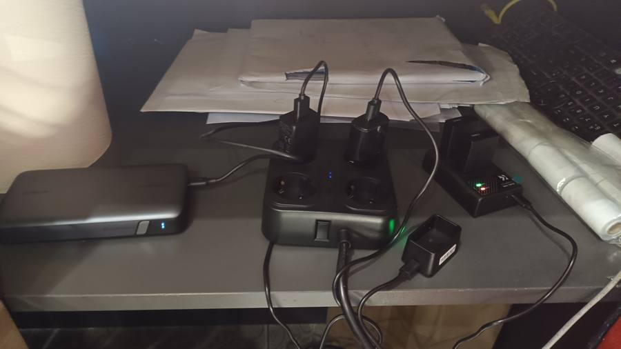
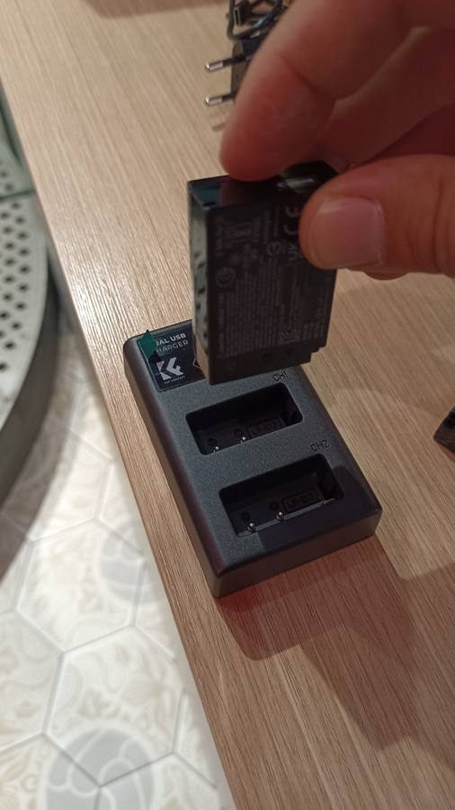
No los apiles cerrados uno encima de otro: se pueden encender solos y gastar la batería.